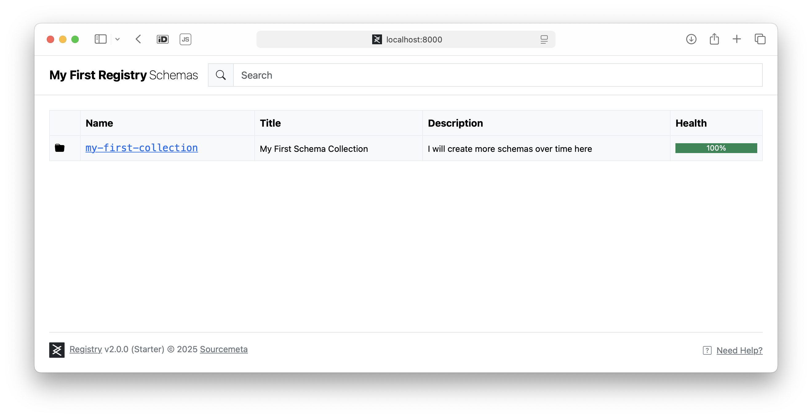

Getting Started
The Sourcemeta Registry operates on a two-phase architecture: indexing and serving. During the indexing phase, the Registry scans, analyses, and compiles your schemas. This preprocessing phase creates a highly optimised cache that enables blazing-fast schema retrieval and evaluation during the serving phase.
As you will see in this guide, setting up the Sourcemeta Registry is straightforward:
- Create a configuration file that sets up your registry exactly as you want it
- Create a
Dockerfilethat extends the slim official base images and indexes your schemas at build time - Run the optimised registry
Hello World
Got two minutes to spare and Docker installed on your machine? Brilliant! Let's get a sample instance of the Registry up and running locally in no time.
Our First Schema
Every good story starts with a character, so let's create a simple person
schema. Pop this into a file called schemas/person.json:
{
"$schema": "https://json-schema.org/draft/2020-12/schema",
"title": "Person",
"description": "A simple schema for describing a person",
"type": "object",
"required": [ "name", "age" ],
"properties": {
"age": { "type": "integer", "minimum": 0 },
"name": { "type": "string" }
},
"additionalProperties": false
}
Tip
We know that working with schemas can be a bit of a maze—authoring, maintaining, debugging, and testing them all have their quirks. For a smoother ride, we highly recommend the open source Sourcemeta JSON Schema CLI as your trusty sidekick, and do bookmark our Learn JSON Schema site for those moments when you need a quick reference on JSON Schema specifics.
Configuring the Registry
Now for the magic ingredient: a configuration file that
tells the Registry which schemas to feast upon. Whilst the full configuration
documentation covers loads more options, we'll keep things simple here. We're
setting our url to http://localhost:8000 (where we'll serve our schemas),
adding a touch of personality with a custom name in the html section, and
creating our very first schema collection called my-first-collection. This
collection will gobble up our person schema by pointing to the schemas
directory we just created. Save this as registry.json alongside your
schemas folder:
{
"url": "http://localhost:8000",
"html": {
"name": "My First Registry"
},
"contents": {
"my-first-collection": {
"title": "My First Schema Collection",
"description": "I will create more schemas over time here",
"path": "./schemas"
}
}
}
Writing a Dockerfile
Time to put it all together! Create a Dockerfile with these contents. We're
extending the official sourcemeta/registry image from GitHub
Packages,
copying our configuration file and schemas directory into the container, and
then running the indexing process with the sourcemeta command. Simple as
that!
FROM ghcr.io/sourcemeta/registry:3.2
COPY registry.json .
COPY schemas schemas
RUN sourcemeta registry.json
Running Locally
Right, we're all set! Let's build our Docker image (we'll call it
my-first-registry) and fire up the Registry. The Registry serves on port 8000
by default, so we'll expose that:
$ docker build --tag my-first-registry . --file Dockerfile
$ docker run --publish 8000:8000 my-first-registry
Now head over to http://localhost:8000 in your favourite web browser, and you'll be greeted by your very own instance:

Next Steps
Congratulations! You've just built your first Sourcemeta Registry in under two minutes (told you so!). Whilst our single-schema registry might seem modest, you've got the perfect foundation to experiment and expand.
Ready to take things further? Take a look at our integrations which cover ways on which you can pull and use the schemas in a growing amount of programming languages and applications.
We also recommend exploring the full range of options in the Registry configuration file, discovering how to import ready-made schema collections through our built-in schema library, exploring the HTTP API, and having a peek at schemas.sourcemeta.com to see what a fully-fledged public instance looks like in the wild.
Using Docker
The Sourcemeta Registry is exclusively distributed as Docker images published to GitHub Packages. We provide multi-architecture images supporting both x64 and arm64 platforms, ensuring compatibility across different systems whilst maintaining consistent behaviour. Docker is the only officially supported method for running the Registry and we do not provide platform-specific binaries for individual operating systems.
To run the Registry, create a Dockerfile that extends our base image and
follows the build pattern shown below:
# See https://github.com/orgs/sourcemeta/packages?repo_name=registry
FROM ghcr.io/sourcemeta/registry:<version>
# (2) Copy your configuration file and schemas to the *working directory*
# Avoid copying files to other paths outside the working directory, as
# the indexer will not automatically clean them up for you if so!
# See https://registry.sourcemeta.com/configuration/
COPY registry.json .
COPY schemas schemas
# (3) Run the Registry build step on your input configuration file
# The indexer will automatically remove the input schemas from the
# working directory to keep the image lean
RUN sourcemeta registry.json
The build process follows a straightforward pattern: extend the base image, copy your configuration and schema files into the working directory, and run the indexing command. The indexer automatically removes source schemas after processing to keep the final image size minimal.
Environment Variables
The Registry can be configured using the following runtime environment variables.
| Name | Default | Description |
|---|---|---|
SOURCEMETA_REGISTRY_PORT |
8000 |
The HTTP port on which the Registry will listen on |
Using Docker Compose
For more complex deployments or when integrating the Registry alongside other services, Docker Compose provides a convenient orchestration method. The following example demonstrates a basic setup that builds your Registry image and exposes it on the desired port:
services:
registry:
build:
# The Dockerfile that extends the Registry base image
dockerfile: Dockerfile
context: .
environment:
# Set your desired port
- SOURCEMETA_REGISTRY_PORT=8000
ports:
# Expose the ports accordingly
- "8000:8000"
This configuration builds your custom Registry image using the Dockerfile in
the current directory and maps the container's port to your host system. You
can extend this setup to include additional services, networks, or volumes as
needed for your specific deployment requirements.